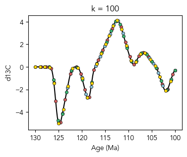
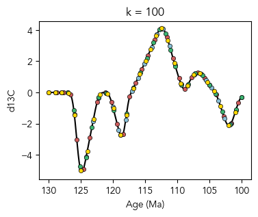

Figure 11: Proxy noise#
This notebook can be used to:
Generate/load and plot the synthetic d13C and age constraint data used for the white noise experiments in Fig. 11
Build and sample the inference model using proxy observations with different amplitudes of added white noise
Load the inference results from the model runs used to produce Fig. 11
Quantify signal recovery for each experiment
Reproduce Fig. 11 using the provided inference results
%load_ext autoreload
%autoreload 2
import matplotlib.pyplot as plt
import numpy as np
import seaborn as sns
from matplotlib import rcParams
import stratmc
rcParams["font.family"] = "sans-serif"
rcParams["font.sans-serif"] = ["Avenir"]
rcParams.update({"text.usetex": False})
import warnings
from scipy.ndimage import gaussian_filter as gaussian
from scipy.stats import gaussian_kde, norm
from tqdm.notebook import tqdm
warnings.simplefilter(action="ignore", category=FutureWarning)
Synthetic d13C signal (Fig. 6a)#
age_vector = np.linspace(100, 130, 250)
amplitude = [-6, -3.5, 4.5, 1.5, -2.5]
seed = 5
d13c_signal = stratmc.synthetics.make_excursion(
age_vector,
amplitude,
excursion_duration=[4, 3, 8, 5, 4],
rising_time=[0.3, 0.7, 0.6, 0.4, 0.5],
smooth=True,
smoothing_factor=5,
rate_offset=True,
seed=seed,
baseline=0,
) # seed = 3
d13c_signal = gaussian(np.flip(d13c_signal), 3)
fs = 10
fig = plt.figure(figsize=(2.5, 1.75))
ax = fig.gca()
ax.plot(age_vector, d13c_signal, color="indianred", lw=1.5) # '#87BED5'
ax.set_xlabel("Age (Ma)", fontsize=fs)
ax.set_ylabel("$\delta^{13}$C (‰)", fontsize=fs)
ax.tick_params(direction="in", labelsize=fs)
ax.set_axisbelow(True)
ax.grid(color=(0.95, 0.95, 0.95), linewidth=0.5, linestyle="solid", zorder=-1)
ax.set_xlim([130, 100])
(130.0, 100.0)
def signal_func(new_ages):
return np.interp(new_ages, age_vector, d13c_signal)
Construct gamma age models#
To load the observations directly (instead of generating it yourself), skip this section and run the Load the data section instead
def make_path(pts, g_shape, g_scale, delta):
# separate a number of points (X) along a [0,1] path
if pts != 0:
# X numbers are drawn from a gamma distribution (G)
# --> these represent the distances between successive points
path = np.cumsum(np.random.gamma(g_shape, g_scale, pts))
else:
path = [1] # if X = 0, then path is simply [0,1]
path = np.hstack((0, path)) # add 0 as the path beginning
# scale first to be between 0 and 1, and then 0 to delta
path = path / path[-1] * delta
return path
delta_h = 30
g_shape = 100
sections = ["1", "2", "3", "4"]
sample_dfs = {}
ages_dfs = {}
sample_ages = np.array([])
sample_heights = np.array([])
proxy_vec = np.array([])
section_names = []
age_heights = []
ages_vec = []
ages_std_vec = []
age_section_names = []
# age constraints for each section
ages = {}
ages_std = {}
ages["1"] = [130, 100.5]
ages_std["1"] = [2, 1]
ages["2"] = [128, 100]
ages_std["2"] = [1.5, 0.75]
ages["3"] = [129, 100]
ages_std["3"] = [0.8, 1]
ages["4"] = [130, 101]
ages_std["4"] = [2.5, 1.5]
for section in sections:
delta_t = ages[section][0] - ages[section][-1]
np.random.seed(int(section) * 3)
samples = 29
sample_ages_temp = ages[section][0] - make_path(
samples, g_shape, 1, delta_t
) # age change between knots
sample_ages = np.append(sample_ages, sample_ages_temp)
# high k so that change in height is relatively constant (to simulate a constant stratigraphic sampling rate)
heights = make_path(samples, 100, 1, delta_h) + 0.1 # position change between knots
sample_heights = np.append(sample_heights, heights)
section_proxy = signal_func(sample_ages_temp)
proxy_vec = np.append(proxy_vec, section_proxy)
for i in np.arange(len(section_proxy)):
section_names.append(section)
age_heights.append(0)
age_heights.append(np.max(heights) + 0.1)
ages_vec += ages[section]
ages_std_vec += ages_std[section]
for i in np.arange(2):
age_section_names.append(section)
ages_df, sample_df = stratmc.synthetics.synthetic_signal_to_df(
proxy_vec,
sample_heights,
sample_ages,
section_names,
ages_vec,
ages_std_vec,
age_heights,
age_section_names,
proxies=["d13c"],
)
fig = stratmc.plotting.proxy_strat(sample_df, ages_df)
# plot 1) the true age model for each section, and 2) the proxy observations on top of the synthetic signal
sections = np.unique(sample_df["section"])
section_cs = {}
section_cs["1"] = "indianred"
section_cs["2"] = "#87BED5"
section_cs["3"] = "mediumseagreen"
section_cs["4"] = "gold"
fig, ax = plt.subplots(1, 4, figsize=(8, 2), sharex=True, sharey=True)
fig2 = plt.figure(figsize=(4, 3))
ax2 = fig2.gca()
for i in np.arange(len(sections)):
section = sections[i]
ax[i].plot(
sample_df[sample_df["section"] == section]["age"],
sample_df[sample_df["section"] == section]["height"],
c="gray",
zorder=1,
)
ax[i].scatter(
sample_df[sample_df["section"] == section]["age"],
sample_df[sample_df["section"] == section]["height"],
s=20,
c=section_cs[section],
edgecolor="k",
lw=0.5,
zorder=2,
)
ax[i].set_xlabel("Age (Ma)")
ax2.scatter(
sample_df[sample_df["section"] == section]["age"],
sample_df[sample_df["section"] == section]["d13c"],
color=section_cs[section],
edgecolor="k",
lw=0.5,
s=20,
zorder=2,
)
ax2.plot(age_vector, d13c_signal, color="k", zorder=1)
ax[0].invert_xaxis()
ax[0].set_ylabel("Height (m)")
ax2.invert_xaxis()
ax2.set_xlabel("Age (Ma)")
ax2.set_ylabel("d13C")
ax2.set_title("k = " + str(g_shape))
Text(0.5, 1.0, 'k = 100')
 

# stratmc.data.save_object(sample_df, 'data/proxy_noise_sample_df_unmodified')
# stratmc.data.save_object(ages_df, 'data/proxy_noise_ages_df')
Load the data#
Load the data that were generated in the Construct gamma age models section.
sections = ["1", "2", "3", "4"]
sample_df = stratmc.data.load_object("data/Fig11_proxy_noise_sample_df_unmodified")
ages_df = stratmc.data.load_object("data/Fig11_proxy_noise_ages_df")
Make lithostratigraphy for each section#
facies_colors = {}
facies_widths = {}
facies_colors["limestone"] = "#F4F2F3"
facies_widths["limestone"] = 0.75
section_facies = {}
section_facies_thicknesses = {}
# section 1
section_facies["1"] = ["limestone"]
section_facies_thicknesses["1"] = [np.max(ages_df[ages_df["section"] == "1"]["height"])]
# section 2
section_facies["2"] = ["limestone"]
section_facies_thicknesses["2"] = [np.max(ages_df[ages_df["section"] == "2"]["height"])]
# section 3
section_facies["3"] = ["limestone"]
section_facies_thicknesses["3"] = [np.max(ages_df[ages_df["section"] == "3"]["height"])]
# section 4
section_facies["4"] = ["limestone"]
section_facies_thicknesses["4"] = [np.max(ages_df[ages_df["section"] == "4"]["height"])]
# save the unmodified d13C values
sample_df["d13c_original"] = sample_df["d13c"].copy()
sample_df, ages_df = stratmc.data.clean_data(sample_df, ages_df, ["d13c"], sections)
Add white noise to proxy observations#
For each experiment, add white noise with amplitude between 0.5 and 5 permil to the data. To generate the data for each trial, change np.random.seed as directed. You can also skip this section and load the modified observations for each trial in Load the modified proxy data.
# concatenating two arrays to make sure the data are reproducible (after adding new test amplitudes)
noise_amp = np.concatenate(
[np.arange(0.5, 5.5, 0.5), np.array([0.75, 1.25, 1.75, 2.25])]
)
## modify the random seed for each trial
# trial 1: np.random.seed(0)
# trial 2: np.random.seed(1)
# trial 3: np.random.seed(2)
np.random.seed(2)
sample_dfs_white = {}
for amp in noise_amp:
sample_dfs_white[amp] = sample_df.copy()
sample_dfs_white[amp]["d13c"] = sample_dfs_white[amp][
"d13c_original"
] + np.random.normal(0, amp, len(sample_dfs_white[amp]["d13c"].values))
# save the modified data
# stratmc.data.save_object(sample_dfs_white, 'data/Fig11_white_noise_sample_df_trial_3')
Load the modified proxy data#
Load the modified proxy observations generated in Add white noise to proxy observations.
noise_amp = np.concatenate(
[np.arange(0.5, 5.5, 0.5), np.array([0.75, 1.25, 1.75, 2.25])]
)
# trial 1
# sample_dfs_white = stratmc.data.load_object('data/Fig11_white_noise_sample_df_trial_1')
# trial 2
# sample_dfs_white = stratmc.data.load_object('data/Fig11_white_noise_sample_df_trial_1')
# trial 3
sample_dfs_white = stratmc.data.load_object("data/Fig11_white_noise_sample_df_trial_3")
Example proxy observations for Section 1 (Fig. 11a)#
np.random.seed(0)
age_colors = {}
age_colors["1"] = ["#7C78A0", "#FFEB7F"]
age_colors["2"] = ["#87BED5", "mediumseagreen"]
age_colors["3"] = ["#F4A27C", "gray"]
age_colors["4"] = ["pink", "white"]
xs = np.linspace(-15, 15, 500)
section = "1"
widths = [0.4] + 7 * [1]
fig, ax = plt.subplots(
1,
8,
figsize=(8.5, 1.75),
sharey=True,
sharex=False,
gridspec_kw={"width_ratios": widths},
)
_ = [ax[i].sharex(ax[1]) for i in np.arange(1, 8)]
idx = [0, 1, 2, 3, 5, 7, 9]
for amp, i in zip(noise_amp[idx], np.arange(1, 1 + len(idx))):
section_ages_df = ages_df[
(ages_df["section"] == section)
& (~np.isnan(ages_df["age"]))
& (~ages_df["intermediate detrital?"])
]
section_df = sample_df[sample_df["section"] == section]
sec_sample_ages = sample_df[sample_df["section"] == section]["age"].values
sec_sample_heights = sample_df[sample_df["section"] == section]["height"].values
sec_radio_ages = section_ages_df["age"].values
sec_ages_comb = np.concatenate([sec_radio_ages, section_df["age"]])
heights_comb = np.concatenate([section_ages_df["height"], section_df["height"]])
heights_comb_sort_idx = np.argsort(heights_comb)
sec_ages_comb = sec_ages_comb[heights_comb_sort_idx]
heights_comb = heights_comb[heights_comb_sort_idx]
new_heights = np.linspace(np.min(heights_comb), np.max(heights_comb), 400)
sec_age_interp = np.interp(new_heights, heights_comb, sec_ages_comb)
d13c_section_interp = np.interp(sec_age_interp, age_vector, d13c_signal)
ax[i].plot(d13c_section_interp, new_heights, c="indianred", zorder=0)
section_df = sample_dfs_white[amp][sample_dfs_white[amp]["section"] == section]
ax[i].scatter(
section_df["d13c"],
section_df["height"],
s=10,
color="indianred",
lw=0.5,
edgecolor="k",
clip_on=False,
zorder=1,
)
pdf = norm.pdf(xs, loc=0, scale=amp)
ax[i].fill_between(xs, pdf * 10, color="white", edgecolor="k", lw=0.5, zorder=2)
ax[1].set_ylim([0, np.max(section_df["height"]) + 0.5])
for i in np.arange(1, 8):
ax[i].spines["top"].set_visible(False)
ax[i].spines["right"].set_visible(False)
ax[i].spines["bottom"].set_visible(True)
ax[i].spines["left"].set_visible(False)
[t.set_color("none") for t in ax[i].yaxis.get_ticklabels()]
ax[i].tick_params(axis="y", color="none")
ax[i].set_xticks([-10, 0, 10])
# strat column
current_base = 0
for facies, thickness in zip(
section_facies[section], section_facies_thicknesses[section]
):
ax[0].barh(
y=current_base,
width=facies_widths[facies],
height=thickness,
linewidth=0.5,
edgecolor="k",
align="edge",
color=facies_colors[facies],
clip_on=False,
)
current_base += thickness
ax[0].scatter(
0,
ages_df[ages_df["section"] == section]["height"].iloc[0],
color=age_colors[section][0],
zorder=9,
edgecolor="k",
clip_on=False,
lw=0.5,
s=20,
marker="s",
)
ax[0].scatter(
0,
ages_df[ages_df["section"] == section]["height"].iloc[1],
color=age_colors[section][1],
zorder=9,
edgecolor="k",
clip_on=False,
lw=0.5,
s=20,
marker="s",
)
ax[0].set_xticks([])
ax[0].spines["top"].set_visible(False)
ax[0].spines["right"].set_visible(False)
ax[0].spines["bottom"].set_visible(False)
ax[0].spines["left"].set_visible(False)
for axis in ax.ravel()[1:]:
axis.set_xlabel("$\delta^{13}$C (‰)", fontsize=fs)
ax[0].set_ylabel("Height (m)", fontsize=fs)
Text(0, 0.5, 'Height (m)')
Run experiments (build and sample the inference model)#
Runs the inference model in a loop that iterates over each noise amplitude, and plots each proxy signal inference. The traces for each trial can be loaded in Load the inference results.
age_min = 100
age_max = 130
predict_ages = np.arange(age_min, age_max + 0.25, 0.25)[:, None]
target_accept = 0.9
# current trial number (used for saving)
trial = 3
for amp in noise_amp:
model, gp = stratmc.model.build_model(
sample_dfs_white[amp],
ages_df,
proxies=["d13c"],
ls_dist="Wald",
ls_min=2,
ls_mu=4,
ls_lambda=15,
noise_type="section", # per-section noise with default prior
offset_type="section", # per-section offset with default prior
)
extension = "Fig11_white_noise_trial_" + str(trial) + "_noise_amp_" + str(amp)
full_trace = stratmc.inference.get_trace(
model,
gp,
predict_ages,
sample_dfs_white[amp],
ages_df,
proxies=["d13c"],
name=extension,
chains=100,
target_accept=0.9,
)
# plot the proxy signal inference for the current noise amplitude
fig = stratmc.plotting.proxy_inference(
sample_dfs_white[amp],
ages_df,
full_trace,
orientation="horizontal",
plot_constraints=True,
plot_data=True,
legend=False,
section_legend=True,
)
ax = fig.gca()
ax.plot(
age_vector, d13c_signal, color="indianred", label="Synthetic signal", zorder=10
)
plt.title(amp)
plt.legend()
plt.show()
Load the inference results#
Create dictionaries of paths to saved NetCDF files with traces. We’ll use the paths to calculate signal recovery/plot the results without loading all of the traces at once (which consumes a lot of memory).
The full traces for trial 3 are included in the traces directory. Due to storage space limitations, the complete traces for trials 1 and 2 were not uploaded, but all summary statistics/data needed to reproduce Fig. 11 are available in saved .pkl files in the data directory.
Dictionary of trace paths#
Keys = noise amplitudes
Trial 1#
# trace_paths_white_1 = {}
# trace_paths_white_1[0.5] = 'traces/' + 'Fig11_white_noise_trial_1_noise_amp_0.5'
# trace_paths_white_1[0.75] = 'traces/' + 'Fig11_white_noise_trial_1_noise_amp_0.75'
# trace_paths_white_1[1] = 'traces/' + 'Fig11_white_noise_trial_1_noise_amp_1.0'
# trace_paths_white_1[1.25] = 'traces/' + 'Fig11_white_noise_trial_1_noise_amp_1.25'
# trace_paths_white_1[1.5] = 'traces/' + 'Fig11_white_noise_trial_1_noise_amp_1.5'
# trace_paths_white_1[1.75] = 'traces/' + 'Fig11_white_noise_trial_1_noise_amp_1.75'
# trace_paths_white_1[2] = 'traces/' + 'Fig11_white_noise_trial_1_noise_amp_2.0'
# trace_paths_white_1[2.25] = 'traces/' + 'Fig11_white_noise_trial_1_noise_amp_2.25'
# trace_paths_white_1[2.5] = 'traces/' + 'Fig11_white_noise_trial_1_noise_amp_2.5'
# trace_paths_white_1[3] = 'traces/' + 'Fig11_white_noise_trial_1_noise_amp_3.0'
# trace_paths_white_1[3.5] = 'traces/' + 'Fig11_white_noise_trial_1_noise_amp_3.5'
# trace_paths_white_1[4] = 'traces/' + 'Fig11_white_noise_trial_1_noise_amp_4.0'
# trace_paths_white_1[4.5] = 'traces/' + 'Fig11_white_noise_trial_1_noise_amp_4.5'
# trace_paths_white_1[5] = 'traces/' + 'Fig11_white_noise_trial_1_noise_amp_5.0'
Trial 2#
# trace_paths_white_2 = {}
# trace_paths_white_2[0.5] = 'traces/' + 'Fig11_white_noise_trial_2_noise_amp_0.5'
# trace_paths_white_2[0.75] = 'traces/' + 'Fig11_white_noise_trial_2_noise_amp_0.75'
# trace_paths_white_2[1] = 'traces/' + 'Fig11_white_noise_trial_2_noise_amp_1.0'
# trace_paths_white_2[1.25] = 'traces/' + 'Fig11_white_noise_trial_2_noise_amp_1.25'
# trace_paths_white_2[1.5] = 'traces/' + 'Fig11_white_noise_trial_2_noise_amp_1.5'
# trace_paths_white_2[1.75] = 'traces/' + 'Fig11_white_noise_trial_2_noise_amp_1.75'
# trace_paths_white_2[2] = 'traces/' + 'Fig11_white_noise_trial_2_noise_amp_2.0'
# trace_paths_white_2[2.25] = 'traces/' + 'Fig11_white_noise_trial_2_noise_amp_2.25'
# trace_paths_white_2[2.5] = 'traces/' + 'Fig11_white_noise_trial_2_noise_amp_2.5'
# trace_paths_white_2[3] = 'traces/' + 'Fig11_white_noise_trial_2_noise_amp_3.0'
# trace_paths_white_2[3.5] = 'traces/' + 'Fig11_white_noise_trial_2_noise_amp_3.5'
# trace_paths_white_2[4] = 'traces/' + 'Fig11_white_noise_trial_2_noise_amp_4.0'
# trace_paths_white_2[4.5] = 'traces/' + 'Fig11_white_noise_trial_2_noise_amp_4.5'
# trace_paths_white_2[5] = 'traces/' + 'Fig11_white_noise_trial_2_noise_amp_5.0'
Trial 3#
trace_paths_white_3 = {}
trace_paths_white_3[0.5] = "traces/" + "Fig11_white_noise_trial_3_noise_amp_0.5"
trace_paths_white_3[0.75] = "traces/" + "Fig11_white_noise_trial_3_noise_amp_0.75"
trace_paths_white_3[1] = "traces/" + "Fig11_white_noise_trial_3_noise_amp_1.0"
trace_paths_white_3[1.25] = "traces/" + "Fig11_white_noise_trial_3_noise_amp_1.25"
trace_paths_white_3[1.5] = "traces/" + "Fig11_white_noise_trial_3_noise_amp_1.5"
trace_paths_white_3[1.75] = "traces/" + "Fig11_white_noise_trial_3_noise_amp_1.75"
trace_paths_white_3[2] = "traces/" + "Fig11_white_noise_trial_3_noise_amp_2.0"
trace_paths_white_3[2.25] = "traces/" + "Fig11_white_noise_trial_3_noise_amp_2.25"
trace_paths_white_3[2.5] = "traces/" + "Fig11_white_noise_trial_3_noise_amp_2.5"
trace_paths_white_3[3] = "traces/" + "Fig11_white_noise_trial_3_noise_amp_3.0"
trace_paths_white_3[3.5] = "traces/" + "Fig11_white_noise_trial_3_noise_amp_3.5"
trace_paths_white_3[4] = "traces/" + "Fig11_white_noise_trial_3_noise_amp_4.0"
trace_paths_white_3[4.5] = "traces/" + "Fig11_white_noise_trial_3_noise_amp_4.5"
trace_paths_white_3[5] = "traces/" + "Fig11_white_noise_trial_3_noise_amp_5.0"
Quantify signal recovery#
Load relative model likelihoods (used to compare synthetic proxy signal recovery for different models) for all 3 trials (in Load calculated relative model likelihoods), and optionally re-run the calculations for trial 3.
# interpolate proxy signal to same ages where proxy signal was inferred
full_trace = stratmc.data.load_trace(trace_paths_white_3[0.5])
predict_ages = full_trace.X_new.X_new.values
d13c_signal_interp = np.interp(predict_ages, age_vector, d13c_signal)
/Users/staceyedmonsond/opt/anaconda3/envs/bayestrat-dev-m1-pymc516-accelerate/lib/python3.11/site-packages/arviz/data/inference_data.py:157: UserWarning: X_new group is not defined in the InferenceData scheme
warnings.warn(
## trial 1
# signal_recovery_white_1 = {}
# for amp in tqdm(noise_amp):
# full_trace_white = stratmc.data.load_trace(trace_paths_white_1[amp])
# signal_recovery_white_1[amp] = stratmc.synthetics.quantify_signal_recovery(full_trace_white, d13c_signal_interp, proxy = 'd13c')
# signal_total_white_1 = np.zeros_like(np.array(signal_recovery_white_1[amp]))
# for amp in noise_amp:
# signal_total_white_1 += np.array(signal_recovery_white_1[amp])
# relative_model_likelihood_white_1 = {}
# for amp in noise_amp:
# relative_model_likelihood_white_1[amp] = np.array(signal_recovery_white_1[amp])/signal_total_white_1
# stratmc.data.save_object(relative_model_likelihood_white_1, 'data/Fig11_relative_model_likelihood_trial_1')
## trial 2
# signal_recovery_white_2 = {}
# for amp in tqdm(noise_amp):
# full_trace_white = stratmc.data.load_trace(trace_paths_white_2[amp])
# signal_recovery_white_2[amp] = stratmc.synthetics.quantify_signal_recovery(full_trace_white, d13c_signal_interp, proxy = 'd13c')
# signal_total_white_2 = np.zeros_like(np.array(signal_recovery_white_2[amp]))
# for amp in noise_amp:
# signal_total_white_2 += np.array(signal_recovery_white_2[amp])
# relative_model_likelihood_white_2 = {}
# for amp in noise_amp:
# relative_model_likelihood_white_2[amp] = np.array(signal_recovery_white_2[amp])/signal_total_white_2
# stratmc.data.save_object(relative_model_likelihood_white_2, 'data/Fig11_relative_model_likelihood_trial_2')
signal_recovery_white_3 = {}
for amp in tqdm(noise_amp):
full_trace_white = stratmc.data.load_trace(trace_paths_white_3[amp])
signal_recovery_white_3[amp] = stratmc.synthetics.quantify_signal_recovery(
full_trace_white, d13c_signal_interp, proxy="d13c"
)
signal_total_white_3 = np.zeros_like(np.array(signal_recovery_white_3[amp]))
for amp in noise_amp:
signal_total_white_3 += np.array(signal_recovery_white_3[amp])
relative_model_likelihood_white_3 = {}
for amp in noise_amp:
relative_model_likelihood_white_3[amp] = (
np.array(signal_recovery_white_3[amp]) / signal_total_white_3
)
# stratmc.data.save_object(relative_model_likelihood_white_3, 'data/Fig11_relative_model_likelihood_trial_3')
Load calculated relative model likelihoods#
relative_model_likelihood_white_1 = stratmc.data.load_object(
"data/Fig11_relative_model_likelihood_trial_1"
)
relative_model_likelihood_white_2 = stratmc.data.load_object(
"data/Fig11_relative_model_likelihood_trial_2"
)
relative_model_likelihood_white_3 = stratmc.data.load_object(
"data/Fig11_relative_model_likelihood_trial_3"
)
Load and plot combined posterior noise terms (Fig. 11c)#
Combine the posterior noise terms for all trials and sections, and plot for three example noise amplitudes.
Load concatenated results for all 3 trials in the third cell. The results for trial 3 only can be concatenated using the second cell.
## Concatenate the posterior noise terms for all sections from each trial; the results can be loaded in the next cell
# posterior_noise = {}
# for amp in tqdm(noise_amp):
# posterior_noise[amp] = np.array([])
# for section in sections:
# full_trace_white = stratmc.data.load_trace(trace_paths_white_1[amp])
# posterior_noise[amp] = np.concatenate([posterior_noise[amp], az.extract(full_trace_white.posterior)[section + '_section_noise_d13c'].values.ravel()])
# full_trace_white = stratmc.data.load_trace(trace_paths_white_2[amp])
# posterior_noise[amp] = np.concatenate([posterior_noise[amp], az.extract(full_trace_white.posterior)[section + '_section_noise_d13c'].values.ravel()])
# full_trace_white = stratmc.data.load_trace(trace_paths_white_3[amp])
# posterior_noise[amp] = np.concatenate([posterior_noise[amp], az.extract(full_trace_white.posterior)[section + '_section_noise_d13c'].values.ravel()])
# # save_object(posterior_noise, 'data/Fig11c_white_noise_noise_posteriors_combined')
# un-commend and run this cell to concatenate all of the noise terms for all sections from only trial 3 (traces included in the Zenodo repository)
# posterior_noise = {}
# for amp in tqdm(noise_amp):
# posterior_noise[amp] = np.array([])
# for section in sections:
# full_trace_white = stratmc.data.load_trace(trace_paths_white_3[amp])
# posterior_noise[amp] = np.concatenate([posterior_noise[amp], az.extract(full_trace_white.posterior)[section + '_section_noise_d13c'].values.ravel()])
# load file with combined posterior noise terms for all trials
posterior_noise = stratmc.data.load_object(
"data/Fig11c_white_noise_noise_posteriors_combined"
)
fig = plt.figure(figsize=(5, 3))
sns.kdeplot(
posterior_noise[0.5],
color="#999999",
fill=True,
edgecolor="k",
lw=0.5,
alpha=0.7,
label="Noise amp. = 1.0",
)
sns.kdeplot(
posterior_noise[1.5],
color="#555555",
fill=True,
edgecolor="k",
lw=0.5,
alpha=0.7,
label="Noise amp. = 3.0",
)
sns.kdeplot(
posterior_noise[5],
color="#111111",
fill=True,
edgecolor="k",
lw=0.5,
alpha=0.7,
label="Noise amp. = 5.0",
)
plt.axvline(0.5, linestyle="dashed", lw=1.5, color="#999999")
plt.axvline(1.5, linestyle="dashed", lw=1.5, color="#555555")
plt.axvline(5, linestyle="dashed", lw=1.5, color="#111111")
plt.xlabel("Noise")
plt.legend()
<matplotlib.legend.Legend at 0x12e3cd350>
Summary Figure (Fig. 11)#
Plot example proxy data, proxy signal inferences, and signal recovery metrics using the combined results from all 3 trials
## concatenate posterior proxy signals for trials 1-3, and save the outputs in .pkl files
# amp = 0.5
# full_trace_white = stratmc.data.load_trace(trace_paths_white_1[amp])
# ages = full_trace_white.X_new.X_new.values
# proxy_pred = az.extract(full_trace_white.posterior_predictive)['f_pred_' + 'd13c'].values
# full_trace_white = stratmc.data.load_trace(trace_paths_white_2[amp])
# proxy_pred = np.hstack([proxy_pred, az.extract(full_trace_white.posterior_predictive)['f_pred_' + 'd13c'].values])
# full_trace_white = stratmc.data.load_trace(trace_paths_white_3[amp])
# proxy_pred = np.hstack([proxy_pred, az.extract(full_trace_white.posterior_predictive)['f_pred_' + 'd13c'].values])
# stratmc.data.save_object(proxy_pred, 'data/Fig11b_white_noise_proxy_signal_0.5')
# amp = 1.5
# full_trace_white = stratmc.data.load_trace(trace_paths_white_1[amp])
# ages = full_trace_white.X_new.X_new.values
# proxy_pred = az.extract(full_trace_white.posterior_predictive)['f_pred_' + 'd13c'].values
# full_trace_white = stratmc.data.load_trace(trace_paths_white_2[amp])
# proxy_pred = np.hstack([proxy_pred, az.extract(full_trace_white.posterior_predictive)['f_pred_' + 'd13c'].values])
# full_trace_white = stratmc.data.load_trace(trace_paths_white_3[amp])
# proxy_pred = np.hstack([proxy_pred, az.extract(full_trace_white.posterior_predictive)['f_pred_' + 'd13c'].values])
# stratmc.data.save_object(proxy_pred, 'data/Fig11b_white_noise_proxy_signal_1.5')
# amp = 5
# full_trace_white = stratmc.data.load_trace(trace_paths_white_1[amp])
# ages = full_trace_white.X_new.X_new.values
# proxy_pred = az.extract(full_trace_white.posterior_predictive)['f_pred_' + 'd13c'].values
# full_trace_white = stratmc.data.load_trace(trace_paths_white_2[amp])
# proxy_pred = np.hstack([proxy_pred, az.extract(full_trace_white.posterior_predictive)['f_pred_' + 'd13c'].values])
# full_trace_white = stratmc.data.load_trace(trace_paths_white_3[amp])
# proxy_pred = np.hstack([proxy_pred, az.extract(full_trace_white.posterior_predictive)['f_pred_' + 'd13c'].values])
# stratmc.data.save_object(proxy_pred, 'data/Fig11b_white_noise_proxy_signal_5')
/Users/staceyedmonsond/opt/anaconda3/envs/bayestrat-dev-m1-pymc516-accelerate/lib/python3.11/site-packages/arviz/data/inference_data.py:157: UserWarning: X_new group is not defined in the InferenceData scheme
warnings.warn(
## load concatenated posterior proxy signals for trials 1-3 (only trial 3 traces are included in the archive due to size constraints)
proxy_pred = {}
proxy_pred[0.5] = stratmc.data.load_object("data/Fig11b_white_noise_proxy_signal_0.5")
proxy_pred[1.5] = stratmc.data.load_object("data/Fig11b_white_noise_proxy_signal_1.5")
proxy_pred[5] = stratmc.data.load_object("data/Fig11b_white_noise_proxy_signal_5")
# grab the posterior predictive age vector for plotting
full_trace_white = stratmc.data.load_trace(trace_paths_white_3[0.5])
predict_ages = full_trace_white.X_new.X_new.values
del full_trace_white
/Users/staceyedmonsond/opt/anaconda3/envs/bayestrat-dev-m1-pymc516-accelerate/lib/python3.11/site-packages/arviz/data/inference_data.py:157: UserWarning: X_new group is not defined in the InferenceData scheme
warnings.warn(
mosaic = """
112233
444555
"""
fs = 10
fig, ax = plt.subplot_mosaic(
mosaic, figsize=(7.5, 4), sharex=False, sharey=False, constrained_layout=False
)
ax["1"].sharex(ax["2"])
ax["2"].sharex(ax["3"])
ax["1"].sharey(ax["2"])
ax["2"].sharey(ax["3"])
# signal inferences (averaged across all 3 trials) for noise with amplitiude of 1, 3, and 5 sigma (subplots 1, 2, 3)
# amplitude = 0.5
amp = 0.5
hi = np.percentile(proxy_pred[amp], 97.5, axis=1).flatten()
lo = np.percentile(proxy_pred[amp], 2.5, axis=1).flatten()
ax["1"].fill_between(
predict_ages.ravel(),
hi,
lo,
color="white",
# label='95% envelope',
linestyle="--",
edgecolor="none",
alpha=1,
lw=0, # 1.5
zorder=1,
)
ax["1"].fill_between(
predict_ages.ravel(),
hi,
lo,
color="black",
linestyle="--",
edgecolor="none",
alpha=0.1,
lw=0, # 1.5
zorder=2,
)
ax["1"].fill_between(
predict_ages.ravel(),
hi,
lo,
color="none",
label="95% envelope",
linestyle="--",
edgecolor="gray",
alpha=1,
lw=0.75, # 1.5
zorder=3,
)
hi = np.percentile(proxy_pred[amp], 100 - 16, axis=1).flatten()
lo = np.percentile(proxy_pred[amp], 16, axis=1).flatten()
ax["1"].fill_between(
predict_ages.ravel(),
hi,
lo,
color="black",
edgecolor="none",
alpha=0.1,
lw=0, # 1.5
zorder=4,
)
ax["1"].fill_between(
predict_ages.ravel(),
hi,
lo,
color="none",
label="68% envelope",
edgecolor="gray",
alpha=1,
lw=0.75,
zorder=5,
)
dy = np.linspace(np.min(proxy_pred[amp]), np.max(proxy_pred[amp]), 400)
max_like = np.zeros(predict_ages.size)
for i in np.arange(predict_ages.size):
time_slice = proxy_pred[amp][i, :]
max_like[i] = dy[np.argmax(gaussian_kde(time_slice, bw_method=1)(dy))]
max_like = gaussian(max_like, 2)
ax["1"].plot(
predict_ages.ravel(),
max_like,
color="gray",
linestyle="solid",
lw=1.5,
zorder=6,
label="Most likely $\delta^{13}$C",
)
ax["1"].plot(
age_vector, d13c_signal, color="indianred", lw=1.5, label="True Signal", zorder=10
)
# amplitude = 1.5
amp = 1.5
hi = np.percentile(proxy_pred[amp], 97.5, axis=1).flatten()
lo = np.percentile(proxy_pred[amp], 2.5, axis=1).flatten()
ax["2"].fill_between(
predict_ages.ravel(),
hi,
lo,
color="white",
linestyle="--",
edgecolor="none",
alpha=1,
lw=0, # 1.5
zorder=1,
)
ax["2"].fill_between(
predict_ages.ravel(),
hi,
lo,
color="black",
linestyle="--",
edgecolor="none",
alpha=0.1,
lw=0, # 1.5
zorder=2,
)
ax["2"].fill_between(
predict_ages.ravel(),
hi,
lo,
color="none",
label="95% envelope",
linestyle="--",
edgecolor="gray",
alpha=1,
lw=0.75,
zorder=3,
)
hi = np.percentile(proxy_pred[amp], 100 - 16, axis=1).flatten()
lo = np.percentile(proxy_pred[amp], 16, axis=1).flatten()
ax["2"].fill_between(
predict_ages.ravel(),
hi,
lo,
color="black",
edgecolor="none",
alpha=0.1,
lw=0, # 1.5
zorder=4,
)
ax["2"].fill_between(
predict_ages.ravel(),
hi,
lo,
color="none",
label="68% envelope",
edgecolor="gray",
alpha=1,
lw=0.75, # 1.5
zorder=5,
)
dy = np.linspace(np.min(proxy_pred[amp]), np.max(proxy_pred[amp]), 400)
max_like = np.zeros(predict_ages.size)
for i in np.arange(predict_ages.size):
time_slice = proxy_pred[amp][i, :]
max_like[i] = dy[np.argmax(gaussian_kde(time_slice, bw_method=1)(dy))]
max_like = gaussian(max_like, 2)
ax["2"].plot(
predict_ages.ravel(),
max_like,
color="gray",
linestyle="solid",
lw=1.5,
zorder=6,
label="Most likely $\delta^{13}$C",
)
ax["2"].plot(
age_vector, d13c_signal, color="indianred", lw=1.5, label="True Signal", zorder=10
)
# amplitude = 5
amp = 5
hi = np.percentile(proxy_pred[amp], 97.5, axis=1).flatten()
lo = np.percentile(proxy_pred[amp], 2.5, axis=1).flatten()
ax["3"].fill_between(
predict_ages.ravel(),
hi,
lo,
color="white",
# label='95% envelope',
linestyle="--",
edgecolor="none",
alpha=1,
lw=0, # 1.5
zorder=1,
)
ax["3"].fill_between(
predict_ages.ravel(),
hi,
lo,
color="black",
linestyle="--",
edgecolor="none",
alpha=0.1,
lw=0, # 1.5
zorder=2,
)
ax["3"].fill_between(
predict_ages.ravel(),
hi,
lo,
color="none",
label="95% envelope",
linestyle="--",
edgecolor="gray",
alpha=1,
lw=0.75,
zorder=3,
)
hi = np.percentile(proxy_pred[amp], 100 - 16, axis=1).flatten()
lo = np.percentile(proxy_pred[amp], 16, axis=1).flatten()
ax["3"].fill_between(
predict_ages.ravel(),
hi,
lo,
color="black",
edgecolor="none",
alpha=0.1,
lw=0, # 1.5
zorder=4,
)
ax["3"].fill_between(
predict_ages.ravel(),
hi,
lo,
color="none",
label="68% envelope",
edgecolor="gray",
alpha=1,
lw=0.75, # 1.5
zorder=5,
)
dy = np.linspace(np.min(proxy_pred[amp]), np.max(proxy_pred[amp]), 400)
max_like = np.zeros(predict_ages.size)
for i in np.arange(predict_ages.size):
time_slice = proxy_pred[amp][i, :]
max_like[i] = dy[np.argmax(gaussian_kde(time_slice, bw_method=1)(dy))]
max_like = gaussian(max_like, 2)
ax["3"].plot(
predict_ages.ravel(),
max_like,
color="gray",
linestyle="solid",
lw=1.5,
zorder=6,
label="Most likely $\delta^{13}$C",
)
ax["3"].plot(
age_vector, d13c_signal, color="indianred", lw=1.5, label="True Signal", zorder=10
)
[t.set_color("none") for t in ax["2"].yaxis.get_ticklabels()]
[t.set_color("none") for t in ax["3"].yaxis.get_ticklabels()]
# posterior noise terms (loaded from .pkl in earlier cell)
sns.kdeplot(
posterior_noise[0.5],
color="#999999",
fill=True,
edgecolor="k",
lw=0.5,
ax=ax["4"],
alpha=0.7,
)
sns.kdeplot(
posterior_noise[1.5],
color="#555555",
fill=True,
edgecolor="k",
lw=0.5,
ax=ax["4"],
alpha=0.7,
)
sns.kdeplot(
posterior_noise[5],
color="#111111",
fill=True,
edgecolor="k",
lw=0.5,
ax=ax["4"],
alpha=0.7,
)
ax["4"].axvline(0.5, linestyle="dashed", lw=1.5, color="#999999")
ax["4"].axvline(1.5, linestyle="dashed", lw=1.5, color="#555555")
ax["4"].axvline(5, linestyle="dashed", lw=1.5, color="#111111")
ax["4"].set_xlabel("Inferred Per-Section Noise", fontsize=fs)
ax["4"].set_yticks([])
ax["4"].set_ylabel("")
for amp in noise_amp:
vec = [
np.mean(relative_model_likelihood_white_1[amp]),
np.mean(relative_model_likelihood_white_2[amp]),
np.mean(relative_model_likelihood_white_3[amp]),
]
ax["5"].bar(amp, np.mean(vec), width=0.25, color="gray", edgecolor="k", lw=0.5)
ax["5"].set_ylabel("Relative Model Likelihood", fontsize=fs)
ax["5"].set_xlabel("$\sigma_{noise}$", fontsize=fs)
ax["5"].yaxis.set_label_position("right")
ax["5"].yaxis.tick_right()
for i in "123":
ax[i].set_xlabel("Age (Ma)", fontsize=fs)
ax["1"].set_ylabel("$\delta^{13}$C (‰)", fontsize=fs)
ax["1"].invert_xaxis()
for i in "12345":
ax[i].set_axisbelow(True)
ax[i].grid(color=(0.95, 0.95, 0.95), linewidth=0.5, linestyle="solid", zorder=-1)
ax[i].tick_params(labelsize=fs)
fig.tight_layout()